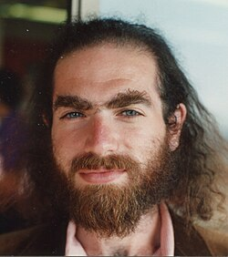

Grigori Perelman | |
|---|---|
Григорий Перельман | |
 Perelman in 1993 | |
| Born | Grigori Yakovlevich Perelman 13 June 1966 Leningrad, Russian SFSR, Soviet Union |
| Education | Leningrad State University (PhD) |
| Known for | Proof of the soul conjecture, Poincaré conjecture and geometrization of 3-manifolds |
| Awards |
|
| Scientific career | |
| Fields | |
| Institutions | |
| Thesis | Saddle Surfaces in Euclidean Spaces (1990) |
Grigori Yakovlevich Perelman (Russian: Григорий Яковлевич Перельман, pronounced [ɡrʲɪˈɡorʲɪj ˈjakəvlʲɪvʲɪtɕ pʲɪrʲɪlʲˈman] ⓘ; born 13 June 1966) is a Russian mathematician and geometer who is known for his contributions to the fields of geometric analysis, Riemannian geometry, and geometric topology. In 2005, Perelman resigned from his research post in Steklov Institute of Mathematics and in 2006 stated that he had quit professional mathematics, owing to feeling disappointed over the ethical standards in the field. He lives in seclusion in Saint Petersburg and has declined requests for interviews since 2006.
In the 1990s, partly in collaboration with Yuri Burago, Mikhael Gromov, and Anton Petrunin, he made contributions to the study of Alexandrov spaces. In 1994, he proved the soul conjecture in Riemannian geometry, which had been an open problem for the previous 20 years. In 2002 and 2003, he developed new techniques in the analysis of Ricci flow, and proved the Poincaré conjecture and Thurston's geometrization conjecture, the former of which had been a famous open problem in mathematics for the past century. The full details of Perelman's work were filled in and explained by various authors over the following several years.
In August 2006, Perelman was offered the Fields Medal[1] for "his contributions to geometry and his revolutionary insights into the analytical and geometric structure of the Ricci flow", but he declined the award, stating: "I'm not interested in money or fame; I don't want to be on display like an animal in a zoo."[2] On 22 December 2006, the scientific journal Science recognized Perelman's proof of the Poincaré conjecture as the scientific "Breakthrough of the Year", the first such recognition in the area of mathematics.[3]
On 18 March 2010, it was announced that he had met the criteria to receive the first Clay Millennium Prize[4] for resolution of the Poincaré conjecture. On 1 July 2010, he rejected the prize of one million dollars, saying that he considered the decision of the board of the Clay Institute to be unfair, in that his contribution to solving the Poincaré conjecture was no greater than that of Richard S. Hamilton, the mathematician who pioneered the Ricci flow partly with the aim of attacking the conjecture.[5][6] He had previously rejected the prestigious prize of the European Mathematical Society in 1996.[7]
Grigori Yakovlevich Perelman was born in Leningrad, Soviet Union (now Saint Petersburg, Russia) on 13 June 1966, to Jewish parents,[8][9][10] Yakov (who now resides in Israel)[8] and Lyubov (who has continued to reside in Saint Petersburg with Perelman).[8] Perelman's mother Lyubov gave up graduate work in mathematics to raise him. Perelman's mathematical talent became apparent at the age of 10, and his mother enrolled him in Sergei Rukshin's after-school mathematics training program.[11]
His mathematical education continued at the Leningrad Secondary School 239, a specialized school with advanced mathematics and physics programs. Perelman excelled in all subjects except physical education.[12] In 1982, not long after his sixteenth birthday, he won a gold medal as a member of the Soviet team at the International Mathematical Olympiad hosted in Budapest, achieving a perfect score.[13] He continued his studies at School of Mathematics and Mechanics of the Leningrad State University.
After completing his PhD in 1990, Perelman began working at Leningrad Department of Steklov Institute of Mathematics of the USSR Academy of Sciences, where his advisors were Aleksandr Aleksandrov and Yuri Burago. In the late 1980s and early 1990s, with a strong recommendation from the geometer Mikhail Gromov,[14] Perelman obtained research positions at several universities in the United States. In 1991, Perelman won the Young Mathematician Prize of the Saint Petersburg Mathematical Society for his work on Aleksandrov's spaces of curvature bounded from below.[15] In 1992, he was invited to spend a semester each at the Courant Institute in New York University, where he began work on manifolds with lower bounds on Ricci curvature. From there, he accepted a two-year Miller Research Fellowship at the University of California, Berkeley, in 1993. After proving the soul conjecture in 1994, he was offered jobs at several top universities in the US, including Princeton and Stanford, but he rejected them all and returned to the Steklov Institute in Saint Petersburg in the summer of 1995 for a research-only position.[11]
In his undergraduate studies, Perelman dealt with issues in the field of convex geometry. His first published article studied the combinatorial structures arising from intersections of convex polyhedra.[P85] With I. V. Polikanova, he established a measure-theoretic formulation of Helly's theorem.[PP86] In 1987, the year he began graduate studies, he published an article controlling the size of circumscribed cylinders by that of inscribed spheres.[P87]
Surfaces of negative curvature were the subject of Perelman's graduate studies. His first result was on the possibility of prescribing the structure of negatively-curved polyhedral surfaces in three-dimensional Euclidean space. He proved that any such metric on the plane which is complete can be continuously immersed as a polyhedral surface.[P88] Later, he constructed an example of a smooth hypersurface of four-dimensional Euclidean space which is complete and has Gaussian curvature negative and bounded away from zero. Previous examples of such surfaces were known, but Perelman's was the first to exhibit the saddle property on nonexistence of locally strictly supporting hyperplanes.[P89] As such, his construction provided further obstruction to the extension of a well-known theorem of Nikolai Efimov to higher dimensions.[16]
Perelman's first works to have a major impact on the mathematical literature were in the field of Alexandrov spaces, the concept of which dates back to the 1950s. In a very well-known paper coauthored with Yuri Burago and Mikhael Gromov, Perelman established the modern foundations of this field, with the notion of Gromov–Hausdorff convergence as an organizing principle.[BGP92] In a followup unpublished paper, Perelman proved his "stability theorem," asserting that in the collection of all Alexandrov spaces with a fixed curvature bound, all elements of any sufficiently small metric ball around a compact space are mutually homeomorphic.[P91] Vitali Kapovitch, who described Perelman's article as being "very hard to read," later wrote a detailed version of Perelman's proof, making use of some further simplifications.
Perelman developed a version of Morse theory on Alexandrov spaces.[P93] Despite the lack of smoothness in Alexandrov spaces, Perelman and Anton Petrunin were able to consider the gradient flow of certain functions, in unpublished work.[PP95] They also introduced the notion of an "extremal subset" of Alexandrov spaces, and showed that the interiors of certain extremal subsets define a stratification of the space by topological manifolds.[PP93] In further unpublished work, Perelman studied DC functions (difference of concave functions) on Alexandrov spaces and established that the set of regular points has the structure of a manifold modeled on DC functions.[P95d]
For his work on Alexandrov spaces, Perelman was recognized with an invited lecture at the 1994 International Congress of Mathematicians.[P95a]
In 1972, Jeff Cheeger and Detlef Gromoll established their important soul theorem. It asserts that every complete Riemannian manifold of nonnegative sectional curvature has a compact nonnegatively curved submanifold, called a soul, whose normal bundle is diffeomorphic to the original space. From the perspective of homotopy theory, this says in particular that every complete Riemannian manifold of nonnegative sectional curvature may be taken to be closed. Cheeger and Gromoll conjectured that if the curvature is strictly positive somewhere, then the soul can be taken to be a single point, and hence that the original space must be diffeomorphic to Euclidean space. In 1994, Perelman gave a short proof of Cheeger and Gromoll's conjecture by establishing that, under the condition of nonnegative sectional curvature, Sharafutdinov's retraction is a submersion.[P94b] Perelman's theorem is significant in establishing a topological obstruction to deforming a nonnegatively curved metric to one which is positively curved, even at a single point.
Some of Perelman's work dealt with the construction of various interesting Riemannian manifolds with positive Ricci curvature. He found Riemannian metrics on the connected sum of arbitrarily many complex projective planes with positive Ricci curvature, bounded diameter, and volume bounded away from zero.[P97b] Also, he found an explicit complete metric on four-dimensional Euclidean space with positive Ricci curvature and Euclidean volume growth, and such that the asymptotic cone is non-uniquely defined.[P97c]
The Poincaré conjecture, proposed by mathematician Henri Poincaré in 1904, was throughout the 20th century regarded as a key problem in topology. On the 3-sphere, defined as the set of points at unit length from the origin in four-dimensional Euclidean space, any loop can be contracted into a point. Poincaré suggested that a converse might be true: if a closed three-dimensional manifold has the property that any loop can be contracted into a point, then it must be topologically equivalent to a 3-sphere. Stephen Smale proved a high-dimensional analogue of Poincaré's conjecture in 1961, and Michael Freedman proved the four-dimensional version in 1982.[17][18] Despite their work, the case of three-dimensional spaces remained completely unresolved. Moreover, Smale and Freedman's methods have had no impact on the three-dimensional case, as their topological manipulations, moving "problematic regions" out of the way without interfering with other regions, seem to require high dimensions in order to work.
In 1982, William Thurston developed a novel viewpoint, making the Poincaré conjecture into a small special case of a hypothetical systematic structure theory of topology in three dimensions. His proposal, known as the Thurston geometrization conjecture, posited that given any closed three-dimensional manifold whatsoever, there is some collection of two-dimensional spheres and tori inside of the manifold which disconnect the space into separate pieces, each of which can be endowed with a uniform geometric structure.[19] Thurston was able to prove his conjecture under some provisional assumptions. In John Morgan's view, it was only with Thurston's systematic viewpoint that most topologists came to believe that the Poincaré conjecture would be true.[20]
At the same time that Thurston published his conjecture, Richard Hamilton introduced his theory of the Ricci flow. Hamilton's Ricci flow is a prescription, defined by a partial differential equation formally analogous to the heat equation, for how to deform a Riemannian metric on a manifold. The heat equation, such as when applied in the sciences to physical phenomena such as temperature, models how concentrations of extreme temperatures will spread out until a uniform temperature is achieved throughout an object. In three seminal articles published in the 1980s, Hamilton proved that his equation achieved analogous phenomena, spreading extreme curvatures and uniformizing a Riemannian metric, in certain geometric settings.[21][22][23] As a byproduct, he was able to prove some new and striking theorems in the field of Riemannian geometry.
Despite formal similarities, Hamilton's equations are significantly more complex and nonlinear than the heat equation, and it is impossible that such uniformization is achieved without contextual assumptions. In completely general settings, it is inevitable that "singularities" occur, meaning that curvature accumulates to infinite levels after a finite amount of "time" has elapsed. Following Shing-Tung Yau's suggestion that a detailed understanding of these singularities could be topologically meaningful, and in particular that their locations might identify the spheres and tori in Thurston's conjecture, Hamilton began a systematic analysis.[24] Throughout the 1990s, he found a number of new technical results and methods,[25] culminating in a 1997 publication constructing a "Ricci flow with surgery" for four-dimensional spaces.[26] As an application of his construction, Hamilton was able to settle a four-dimensional curvature-based analogue of the Poincaré conjecture. Yau has identified this article as one of the most important in the field of geometric analysis, saying that with its publication it became clear that Ricci flow could be powerful enough to settle the Thurston conjecture.[27] The key of Hamilton's analysis was a quantitative understanding of how singularities occur in his four-dimensional setting; the most outstanding difficulty was the quantitative understanding of how singularities occur in three-dimensional settings. Although Hamilton was unable to resolve this issue, in 1999 he published work on Ricci flow in three dimensions, showing that if a three-dimensional version of his surgery techniques could be developed, and if a certain conjecture on the long-time behavior of Ricci flow could be established, then Thurston's conjecture would be resolved.[28] This became known as the Hamilton program.
In November 2002 and March 2003, Perelman posted two preprints to arXiv, in which he claimed to have outlined a proof of Thurston's conjecture.[P02][P03a] In a third paper posted in July 2003, Perelman outlined an additional argument, sufficient for proving the Poincaré conjecture (but not the Thurston conjecture), the point being to avoid the most technical work in his second preprint.[P03b]
Perelman's first preprint contained two primary results, both to do with Ricci flow. The first, valid in any dimension, was based on a novel adaptation of Peter Li and Shing-Tung Yau's differential Harnack inequalities to the setting of Ricci flow.[29] By carrying out the proof of the Bishop–Gromov inequality for the resulting Li−Yau length functional, Perelman established his celebrated "noncollapsing theorem" for Ricci flow, asserting that local control of the size of the curvature implies control of volumes. The significance of the noncollapsing theorem is that volume control is one of the preconditions of Hamilton's compactness theorem. As a consequence, Hamilton's compactness and the corresponding existence of subsequential limits could be applied somewhat freely.
The "canonical neighborhoods theorem" is the second main result of Perelman's first preprint. In this theorem, Perelman achieved the quantitative understanding of singularities of three-dimensional Ricci flow which had eluded Hamilton. Roughly speaking, Perelman showed that on a microscopic level, every singularity looks either like a cylinder collapsing to its axis, or a sphere collapsing to its center. Perelman's proof of his canonical neighborhoods theorem is a highly technical achievement, based upon extensive arguments by contradiction in which Hamilton's compactness theorem (as facilitated by Perelman's noncollapsing theorem) is applied to construct self-contradictory manifolds.
Other results in Perelman's first preprint include the introduction of certain monotonic quantities and a "pseudolocality theorem" which relates curvature control and isoperimetry. However, despite being major results in the theory of Ricci flow, these results were not used in the rest of his work.
The first half of Perelman's second preprint, in addition to fixing some incorrect statements and arguments from the first paper, used his canonical neighborhoods theorem to construct a Ricci flow with surgery in three dimensions, systematically excising singular regions as they develop. As an immediate corollary of his construction, Perelman resolved a major conjecture on the topological classification in three dimensions of closed manifolds which admit metrics of positive scalar curvature. His third preprint (or alternatively Colding and Minicozzi's work) showed that on any space satisfying the assumptions of the Poincaré conjecture, the Ricci flow with surgery exists only for finite time, so that the infinite-time analysis of Ricci flow is irrelevant. The construction of Ricci flow with surgery has the Poincaré conjecture as a corollary.
In order to settle the Thurston conjecture, the second half of Perelman's second preprint is devoted to an analysis of Ricci flows with surgery, which may exist for infinite time. Perelman was unable to resolve Hamilton's 1999 conjecture on long-time behavior, which would make Thurston's conjecture another corollary of the existence of Ricci flow with surgery. Nonetheless, Perelman was able to adapt Hamilton's arguments to the precise conditions of his new Ricci flow with surgery. The end of Hamilton's argument made use of Jeff Cheeger and Mikhael Gromov's theorem characterizing collapsing manifolds. In Perelman's adaptation, he required use of a new theorem characterizing manifolds in which collapsing is only assumed on a local level. In his preprint, he said the proof of his theorem would be established in another paper, but he did not then release any further details. Proofs were later published by Takashi Shioya and Takao Yamaguchi,[30] John Morgan and Gang Tian,[31] Jianguo Cao and Jian Ge,[32] and Bruce Kleiner and John Lott.[33]
Perelman's preprints quickly gained the attention of the mathematical community, although they were widely seen as hard to understand since they had been written somewhat tersely. Against the usual style in academic mathematical publications, many technical details had been omitted. It was soon apparent that Perelman had made major contributions to the foundations of Ricci flow, although it was not immediately clear to the mathematical community that these contributions were sufficient to prove the geometrization conjecture or the Poincaré conjecture.
In April 2003, Perelman visited the Massachusetts Institute of Technology, Princeton University, Stony Brook University, Columbia University, and New York University to give short series of lectures on his work, and to clarify some details for experts in the relevant fields. In the years afterwards, three detailed expositions appeared, discussed below. Since then, various parts of Perelman's work have also appeared in a number of textbooks and expository articles.
Perelman's proofs are concise and, at times, sketchy. The purpose of these notes is to provide the details that are missing in [Perelman's first two preprints]... Regarding the proofs, [Perelman's papers] contain some incorrect statements and incomplete arguments, which we have attempted to point out to the reader. (Some of the mistakes in [Perelman's first paper] were corrected in [Perelman's second paper].) We did not find any serious problems, meaning problems that cannot be corrected using the methods introduced by Perelman.
In this paper, we shall present the Hamilton-Perelman theory of Ricci flow. Based on it, we shall give the first written account of a complete proof of the Poincaré conjecture and the geometrization conjecture of Thurston. While the complete work is an accumulated efforts of many geometric analysts, the major contributors are unquestionably Hamilton and Perelman. [...] In this paper, we shall give complete and detailed proofs [...] especially of Perelman's work in his second paper in which many key ideas of the proofs are sketched or outlined but complete details of the proofs are often missing. As we pointed out before, we have to substitute several key arguments of Perelman by new approaches based on our study, because we were unable to comprehend these original arguments of Perelman which are essential to the completion of the geometrization program.
In May 2006, a committee of nine mathematicians voted to award Perelman a Fields Medal for his work on the Ricci flow.[35] However, Perelman declined to accept the prize. Sir John M. Ball, president of the International Mathematical Union, approached Perelman in Saint Petersburg in June 2006 to persuade him to accept the prize. After 10 hours of attempted persuasion over two days, Ball gave up. Two weeks later, Perelman summed up the conversation as follows:[35]
He proposed to me three alternatives: accept and come; accept and don't come, and we will send you the medal later; third, I don't accept the prize. From the very beginning, I told him I have chosen the third one ... [the prize] was completely irrelevant for me. Everybody understood that if the proof is correct, then no other recognition is needed.
He was quoted as saying:[43]
I'm not interested in money or fame, I don't want to be on display like an animal in a zoo. I'm not a hero of mathematics. I'm not even that successful; that is why I don't want to have everybody looking at me.
Nevertheless, on 22 August 2006, at the International Congress of Mathematicians in Madrid, Perelman was offered the Fields Medal "for his contributions to geometry and his revolutionary insights into the analytical and geometric structure of the Ricci flow".[44] He did not attend the ceremony and the presenter informed the congress that Perelman declined to accept the medal, which made him the only person to have ever declined the prize.[7][45]
He has also rejected a prestigious prize from the European Mathematical Society.[7]
On 18 March 2010, Perelman was awarded a Millennium Prize for solving the problem.[46] On 8 June 2010, he did not attend a ceremony in his honor at the Institut Océanographique de Paris to accept his $1 million prize.[47] According to Interfax, Perelman refused to accept the Millennium Prize in July 2010. He considered the decision of the Clay Institute unfair for not sharing the prize with Richard S. Hamilton,[5] and stated that "the main reason is my disagreement with the organized mathematical community. I don't like their decisions, I consider them unjust."[6]
The Clay Institute subsequently used Perelman's prize money to fund the "Poincaré Chair", a temporary position for young promising mathematicians at the Paris Institut Henri Poincaré.[48]
Perelman quit his job at the Steklov Institute in December 2005.[49] His friends are said to have stated that he currently finds mathematics a painful topic to discuss; by 2010, some even said that he had entirely abandoned mathematics.[50]
Perelman is quoted in a 2006 article in The New Yorker saying that he was disappointed with the ethical standards of the field of mathematics. The article implies that Perelman refers particularly to alleged efforts of Fields medalist Shing-Tung Yau to downplay Perelman's role in the proof and play up the work of Cao and Zhu. Perelman added:[35]
I can't say I'm outraged. Other people do worse. Of course, there are many mathematicians who are more or less honest. But almost all of them are conformists. They are more or less honest, but they tolerate those who are not honest. [...] It is not people who break ethical standards who are regarded as aliens. It is people like me who are isolated.
This, combined with the possibility of being awarded a Fields Medal, led him to state that he had quit professional mathematics by 2006. He said:[35]
As long as I was not conspicuous, I had a choice. Either to make some ugly thing[a] or, if I didn't do this kind of thing, to be treated as a pet. Now, when I become a very conspicuous person, I cannot stay a pet and say nothing. That is why I had to quit.
It was unclear whether along with his resignation from Steklov and subsequent seclusion Perelman stopped his mathematics research. Yakov Eliashberg, another Russian mathematician, said that in 2007 Perelman confided to him that he was working on other things, but that it was too premature to discuss them. Perelman has shown interest in the Navier–Stokes equations and the problem of their solutions' existence and smoothness, according to Le Point.[51]
In 2014, Russian media reported that Perelman was working in the field of nanotechnology in Sweden.[52] Shortly thereafter, however, he was spotted again in his native hometown of Saint Petersburg.[52] Russian media speculated that he periodically visits his sister in Sweden, while living in Saint Petersburg and taking care of his elderly mother.[53]
Perelman has avoided journalists and other members of the media. M. Gessen, author of a biography about Perelman, Perfect Rigour: A Genius and the Mathematical Breakthrough of the Century, was unable to meet him.[54] A reporter who had called him was told: "You are disturbing me. I am picking mushrooms."[55]
A Russian documentary about Perelman in which his work is discussed by several leading mathematicians, including Mikhail Gromov, Ludwig Faddeev, Anatoly Vershik, Gang Tian, John Morgan and others was released in 2011 under the title "Иноходец. Урок Перельмана" ("Maverick: Perelman's Lesson").[56]
In April 2011, Aleksandr Zabrovsky, producer of President-Film studio, claimed to have held an interview with Perelman and agreed to shoot a film about him, under the tentative title The Formula of the Universe.[57] Zabrovsky said that in the interview, Perelman explained why he rejected the one million dollar prize.[57] A number of journalists believe that Zabrovsky's interview is most likely a fake, pointing to contradictions in statements supposedly made by Perelman.[58][59][60]
The writer Brett Forrest briefly interacted with Perelman in 2012.[61][62]
| P85. | Perelʹman, G. Ya. (1985). "Realization of abstract k-skeletons as k-skeletons of intersections of convex polyhedra in R2k − 1". In Ivanov, L. D. (ed.). Geometric questions in the theory of functions and sets. Kalinin: Kalinin gosudarstvennyy universitet. pp. 129–131. MR 0829936. Zbl 0621.52003.
|
| PP86. | Polikanova, I. V.; Perelʹman, G. Ya. (1986). "A remark on Helly's theorem". Sibirskij Matematiceskij Zurnal. 27 (5): 191–194. MR 0873724. Zbl 0615.52009.
|
| P87. | Perelʹman, G. Ya. (1987). "k-radii of a convex body". Siberian Mathematical Journal. 28 (4): 665–666. Bibcode:1987SibMJ..28..665P. doi:10.1007/BF00973857. MR 0906047. S2CID 122265141. Zbl 0637.52009.
|
| P88. |
| P89. | Perel'man, G. Ya. (1992). "Example of a complete saddle surface in R4 with Gaussian curvature bounded away from zero" (PDF). Journal of Soviet Mathematics. 59 (2): 760–762. doi:10.1007/BF01097177. ISSN 0090-4104. MR 1049373. S2CID 121011846. Retrieved 13 January 2025.
|
| BGP92. | Burago, Yu; Gromov, M; Perel'man, G (30 April 1992). "A.D. Alexandrov spaces with curvature bounded below". Russian Mathematical Surveys. 47 (2): 1–58. doi:10.1070/RM1992v047n02ABEH000877. ISSN 0036-0279. MR 1185284. S2CID 250908096. Zbl 0802.53018.
|
| P93. | "G. Ya. Perel'man, "Elements of Morse theory on Aleksandrov spaces", Algebra i Analiz, 5:1 (1993), 232–241; St. Petersburg Math. J., 5:1 (1994), 205–213". Math-Net.Ru (in Russian). Retrieved 14 January 2025.
|
| PP93. | "G. Ya. Perel'man, Petrunin, "Extremal subsets in Aleksandrov spaces and the generalized Liberman theorem", Algebra i Analiz, 5:1 (1993), 242–256; St. Petersburg Math. J., 5:1 (1993), 215–227". Math-Net.Ru (in Russian). MR 1220498. Zbl 0815.53072. Retrieved 14 January 2025.
|
| P94a. | Perelman, G. (1994). "Manifolds of positive Ricci curvature with almost maximal volume". Journal of the American Mathematical Society. 7 (2): 299–305. doi:10.1090/S0894-0347-1994-1231690-7. MR 1231690. Zbl 0799.53050.
|
| P94b. | Perelman, G. (1994). "Proof of the soul conjecture of Cheeger and Gromoll". Journal of Differential Geometry. 40 (1): 209–212. doi:10.4310/jdg/1214455292. MR 1285534. S2CID 118147865. Zbl 0818.53056.
|
| P95a. | Perelman, G. (1995). "Spaces with curvature bounded below" (PDF). In Chatterji, S. D. (ed.). Proceedings of the International Congress of Mathematicians, Vol. 1. Zürich, Switzerland ( 3–11 August 1994). Basel: Birkhäuser. pp. 517–525. doi:10.1007/978-3-0348-9078-6. ISBN 3-7643-5153-5. MR 1403952. Zbl 0838.53033.
|
| P95b. | Perelman, G. (1995). "A diameter sphere theorem for manifolds of positive Ricci curvature". Mathematische Zeitschrift. 218 (4): 595–596. doi:10.1007/BF02571925. MR 1326988. S2CID 122333596. Zbl 0831.53033.
|
| P95c. | Perelman, G. (1995). "Widths of nonnegatively curved spaces". Geometric and Functional Analysis. 5 (2): 445–463. doi:10.1007/BF01895675. MR 1334875. S2CID 120415759. Zbl 0845.53031.
|
| P97a. | Perelman, G. (1997). "Collapsing with no proper extremal subsets" (PDF). In Grove, Karsten; Petersen, Peter (eds.). Comparison geometry. Special Year in Differential Geometry held in Berkeley, CA, 1993–94. Mathematical Sciences Research Institute Publications. Vol. 30. Cambridge: Cambridge University Press. pp. 149–155. ISBN 0-521-59222-4. MR 1452871. Zbl 0887.53049. Archived from the original (PDF) on 25 August 2021. Retrieved 29 July 2020.
|
| P97b. | Perelman, G. (1997). "Construction of manifolds of positive Ricci curvature with big volume and large Betti numbers" (PDF). In Grove, Karsten; Petersen, Peter (eds.). Comparison geometry. Special Year in Differential Geometry held in Berkeley, CA, 1993–94. Mathematical Sciences Research Institute Publications. Vol. 30. Cambridge: Cambridge University Press. pp. 157–163. ISBN 0-521-59222-4. MR 1452872. Zbl 0890.53038.
|
| P97c. | Perelman, G. (1997). "A complete Riemannian manifold of positive Ricci curvature with Euclidean volume growth and nonunique asymptotic cone" (PDF). In Grove, Karsten; Petersen, Peter (eds.). Comparison geometry. Special Year in Differential Geometry held in Berkeley, CA, 1993–94. Mathematical Sciences Research Institute Publications. Vol. 30. Cambridge: Cambridge University Press. pp. 165–166. ISBN 0-521-59222-4. MR 1452873. Zbl 0887.53038. Archived from the original (PDF) on 27 August 2021. Retrieved 29 July 2020.
|
| P91. | Perelman, G. (1991). Alexandrov's spaces with curvatures bounded from below II (PDF) (Preprint).
|
| PP95. | Perelman, G.; Petrunin, A. (1995). Quasigeodesics and gradient curves in Alexandrov spaces (PDF) (Preprint).
|
| P95d. | Perelman, G. (1995). DC structure on Alexandrov space (preliminary version) (PDF) (Preprint).
|
| P02. | Perelman, Grisha (2002). "The entropy formula for the Ricci flow and its geometric applications". arXiv:math/0211159. Zbl 1130.53001
|
| P03a. | Perelman, Grisha (2003). "Ricci flow with surgery on three-manifolds". arXiv:math/0303109. Zbl 1130.53002
|
| P03b. | Perelman, Grisha (2003). "Finite extinction time for the solutions to the Ricci flow on certain three-manifolds". arXiv:math/0307245. Zbl 1130.53003
|
He has suffered anti-Semitism (he is Jewish).... Grigory is pure Jewish and I never minded that but my bosses did
Given that his parents were Jewish, Perelman, who was born in 1966, was fortunate in those who took up his cause.
The Clay Mathematics Institute (CMI) announces today that Dr. Grigoriy Perelman of St. Petersburg, Russia, is the recipient of the Millennium Prize for resolution of the Poincaré conjecture.
_(cropped).jpg){kind=link}